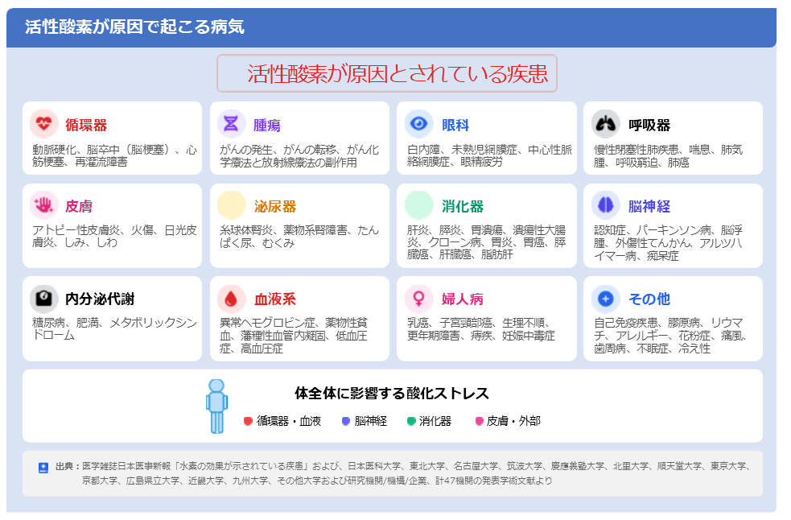
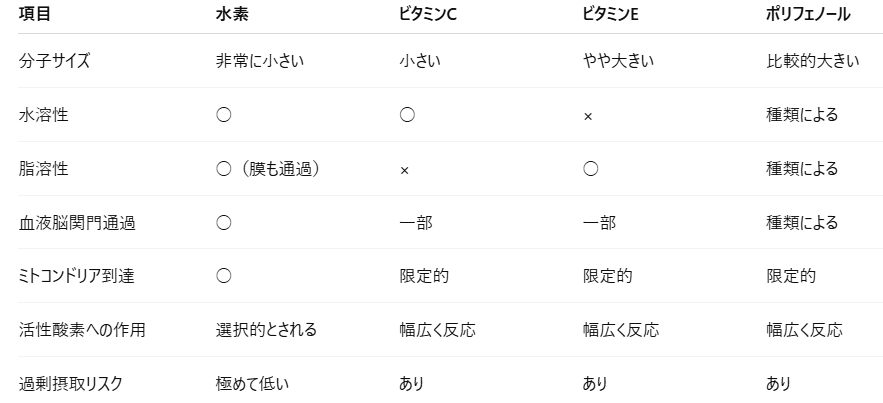

レプトンガス
① 設定項目
内容を記載
補足事項
水素は文字通り「水の素」という意味で命名された元素です。
水素は、宇宙で最も豊富な元素であり、無色・無臭・無味の気体です。
なので、水から酸素を分離して水素を取り出すことができますし、酸素と結びついて水になります。
水素（H₂）は気体ですが、地球上には気体としてではなく、ほとんどが水（H₂O）として存在しています。
ちなみに、宇宙では一番多い元素と言われていて、最小の分子です。
【水素の特徴】
・分子量はわずか2（酸素の16分の1）
・無色 / 無臭 / 無味
・体内で副作用を起こさない
・体のすみずみまで到達する
・悪玉活性酸素のみを除去する
活性酸素は善玉と悪玉に分けられます。
善玉：善玉活性酸素は、体内に侵入した細菌やウイルスを排除する免疫防御や、細胞のシグナル伝達を担う必要不可欠な存在です。
悪玉：強力な酸化力で体内の細胞やDNA、脂質を傷つけ、慢性的な炎症、動脈硬化、がん、糖尿病などの生活習慣病、そしてシミ・シワなどの老化を急速に進める原因物質です。
これらは「体のサビ」とも呼ばれ、全疾患の90%以上に関与しているとも言われています。
【活性酸素が出来る原因】
呼吸による酸素 ⇨ 酸素の約2％が活性酸素に変化
激しい運動・疲労 ⇨ 過度な運動やストレス
紫外線・放射線 ⇨ 太陽からの紫外線や環境中の放射線
睡眠不足
添加物・農薬 ⇨ 食物に含まれる化学物質
タバコ・アルコール ⇨ 嗜好品による酸化ストレス
携帯・PCなどの電磁波
Q.活性酸素は何対何（善玉悪玉の割合）で分かれますか？（過去にあった質問）
A.「2％の内の何対何で悪玉・善玉に分かれる」とは、一般に数値で決められていないです。
Q.環境中の放射線とは？
A.環境中の放射線には、宇宙線、大地からの放射線、食べ物に含まれる放射性物質などがあります

20代までは体内に抗酸化酵素が豊富に存在し、抗酸化作用を発揮していました。
しかし、年齢とともに抗酸化酵素の量は減少し、体内の活性酸素とバランスが取れなくなります。
水素は悪玉活性酸素だけを選択的に除去し、体内に自然に存在する元素であり、副作用がないため、安全に抗酸化作用を発揮できます。
水素と他の代表的な抗酸化物質を比較すると、一番の特徴は 「選択的に悪玉活性酸素だけに反応する可能性があること」と、 「体中に拡散しやすいこと」です。

活性酸素はすべてが悪者ではありません。
などに必要な活性酸素もあります。
一般的な抗酸化物質は活性酸素全体を減らす方向に働きますが、 水素は研究上、
などの強い酸化ストレスに関与するものに選択的に働く可能性があると報告されています。
内容を記載
対応内容を記載